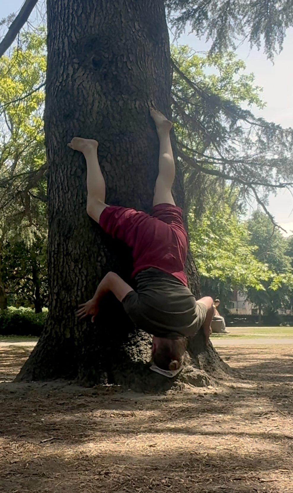
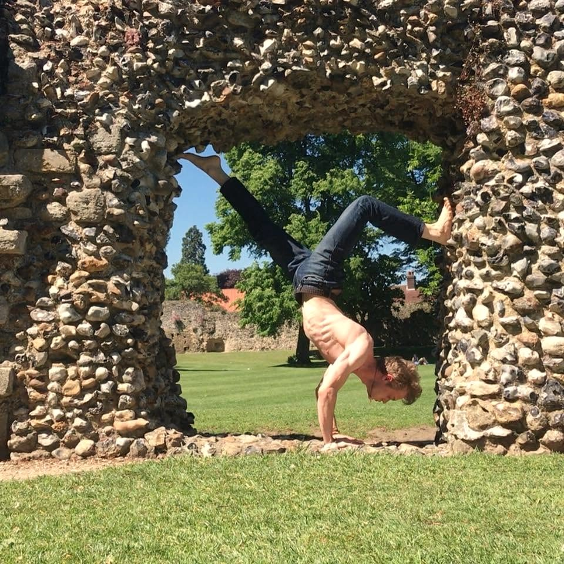
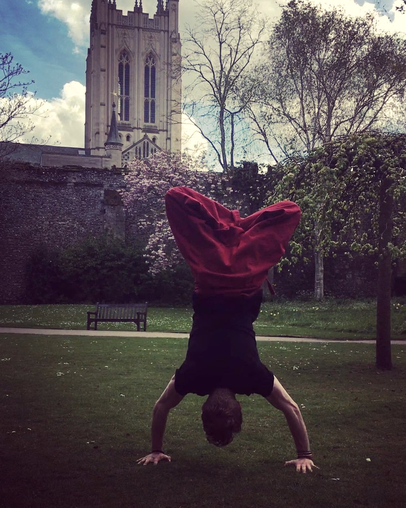

The overwhelm, the tight chest, the old stress that talking never quite reached — it doesn't live in your thoughts. It lives in your body. So that's where we meet it.
KIMBA — Kinesthetic Internal Memory Balancing Action — is a body-first practice I've been building and teaching for over a decade. The premise is simple, and it's the opposite of what most of us were taught: you are not the problem. You are the answer.
What you've been carrying isn't a flaw to fix or a story to talk your way out of. It's tension, memory and stress held in the body — and the body knows how to let it move, when it's met with patience instead of pressure. KIMBA is the structure for that meeting: breath, attention, movement, and a few honest minutes with yourself.
No app to subscribe to. No performing wellness. No permission needed. Just you, your own body, and a practice you keep for life.

At its fullest, KIMBA is done with a partner that can take your weight — often a tree. The trunk gives the body something to push against, so it can open further than it ever could unsupported. Depth comes from resistance, not flexibility.
But it's more than leverage. The tree is alive — old, patient, a witness. The practice is reciprocal: you ask before you lean, and you give something back. That's the spirit of the whole method. You're not forcing anything. You're in conversation with it.

You don't need a tree, a mat, or a spare hour to begin. When the turbulence rises and you feel that wave of "I can't" — this is the practice you can do anywhere, in five minutes, with nothing but your own breath.
Stop moving. Feel where your body meets the chair or floor. Five slow breaths — longer on the way out than the way in.
Ask: where am I feeling this? Chest, throat, shoulders, stomach. Don't fix it — just find it. A hand there, if you like.
Keep breathing slow and steady, right into that spot. Let the feeling be there without arguing with it. That's what lets it move.
On a long out-breath, let it soften. Quietly, to the part of you carrying it: "I know. I've got you. We're safe right now."
Hand on the spot, feel the warmth, three more breaths. Notice anything that's loosened — then carry on, a touch more steady.
That's the whole thing. The more you use it, the faster it works — your body learns it can trust you to meet it.
The Reset is one practice. The Starter Pack is the whole foundation — yours to keep, free.
Pop your email in and I'll send the PDF straight over.
On its way — check your inbox in a moment. 🤍
That didn't go through — try again, or come back another time.
One email with your pack, and the occasional gentle note. Unsubscribe anytime.
I've spent more than ten years on one question: how do we stop performing a version of ourselves that isn't quite us, and come home to the real thing? KIMBA is the body half of that answer — the practice I return to, teach, and have watched change how people carry themselves.
I'm not a clinician, and KIMBA isn't therapy. It's a practice — steady, honest, and yours. I'll meet you where you are, at your pace, only ever as far as feels safe.

If a part of you wants to go further — to understand what your body's been holding, with someone steady alongside you — that's the work I do. Thirty minutes, free, no pressure. Just to see if it's a fit.
Come and say hello →Your pace. Your body. Only ever as far as feels safe — you can slow down, soften, or stop at any moment. KIMBA is a self-help practice and sits alongside any clinical care you have; it doesn't replace it. If you're in crisis, please reach out to a professional or a trusted person.